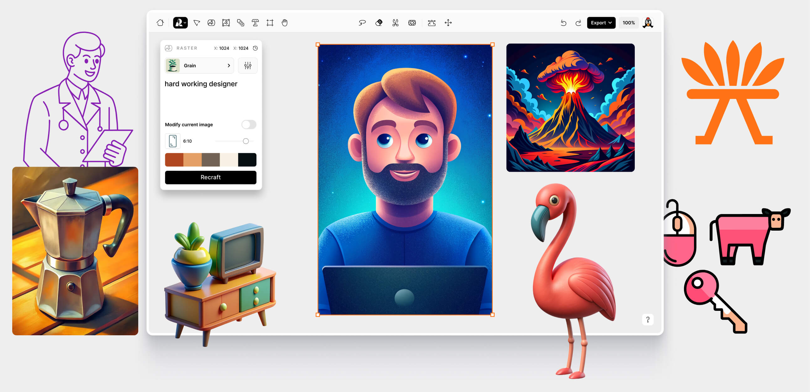
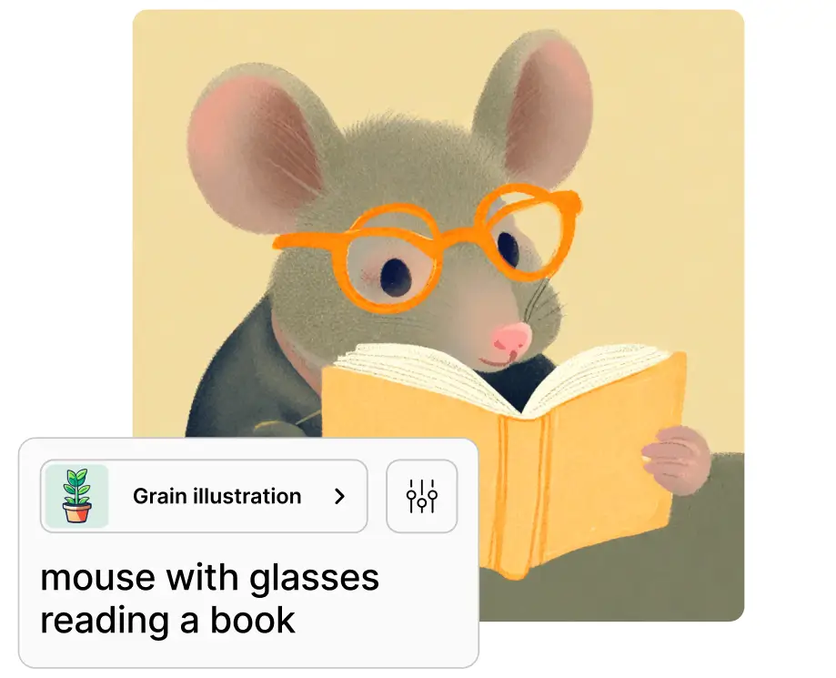

Recraft AI is a powerful generative AI design tool that revolutionizes the creation and editing of digital illustrations, vector art, icons, and 3D graphics. It is designed to help users maintain a consistent brand style across various media, making it a valuable asset for designers, marketers, and creative professionals.

Features of Recraft
Vector Images: Recraft generates resolution-independent SVG vector images that can be scaled losslessly to any size. This makes them perfect for both digital and print designs.
Natural Language Processing: Recraft's advanced NLP allows you to use natural prompts and get high-quality results quickly, without needing to tweak parameters.
Style Shifting: Easily explore variations by shifting between different artistic styles like realism, cartoon, pixel art, and more.
Editing Tools: Select and modify parts of the image easily with lasso and brush tools. Fix anatomy, tweak facial expressions, adjust poses, and more.
Color Palettes: Use brand color palettes or create your own to get images with consistent, precise colors.
Community Galleries: Browse example prompts and creations by others to get inspired and learn new techniques.
Limitations
Performance Variability: AI-generated results can vary, requiring multiple iterations for desired quality.
Learning Curve: May pose challenges for users unfamiliar with design principles.
Free Plan Limitations: Public image creation in the free version might not suit all users.
How Does Recraft Work?
Recraft uses advanced AI and machine learning models to generate images based on text prompts. When you enter a prompt, Recraft's algorithm analyzes it to understand the concepts, attributes, and style you want. It then generates an optimized SVG image matching the prompt.
You can iterate and refine the image by editing the prompt and using features like selecting parts of the image or changing the style. Recraft's AI will update the image accordingly.
Applications

Brand Consistency: Ideal for maintaining uniform design elements across all marketing materials.
Vector Art Creation: Perfect for generating scalable vector art for logos, icons, and professional uses.
3D Graphics and Illustrations: Suitable for creating detailed book covers, game graphics, and other complex visualizations.
Website and UI Design: Enhances the visual appeal and user experience of web and application interfaces.
Educational Materials: Creates engaging diagrams and visual aids for educational content.
Custom Merchandise Design: Facilitates rapid prototyping of customized designs for merchandise.
Conclusion
Recraft AI is a robust and versatile tool for digital design, providing high-quality, consistent visuals across various media. Its user-friendly interface and advanced features make it a valuable tool for both novice and professional designers. While there may be a learning curve and some performance variability, the benefits of streamlined workflows and consistent branding make Recraft AI a preferred choice for many users.